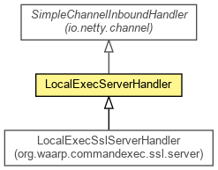

org.waarp.commandexec.server
Class LocalExecServerHandler
java.lang.Object
 org.jboss.netty.channel.SimpleChannelUpstreamHandler
org.waarp.commandexec.server.LocalExecServerHandler
org.jboss.netty.channel.SimpleChannelUpstreamHandler
org.waarp.commandexec.server.LocalExecServerHandler
- All Implemented Interfaces:
- ChannelHandler, ChannelUpstreamHandler
- Direct Known Subclasses:
- LocalExecSslServerHandler
public class LocalExecServerHandler
- extends SimpleChannelUpstreamHandler

Handles a server-side channel for LocalExec.
| Methods inherited from class java.lang.Object |
clone, equals, finalize, getClass, hashCode, notify, notifyAll, toString, wait, wait, wait |
factory
protected LocalExecServerPipelineFactory factory
isShutdown
protected static boolean isShutdown
answered
protected boolean answered
LocalExecServerHandler
public LocalExecServerHandler(LocalExecServerPipelineFactory factory,
long newdelay)
- Constructor with a specific delay
- Parameters:
newdelay -
isShutdown
public static boolean isShutdown(Channel channel)
- Is the Local Exec Server going Shutdown
- Parameters:
channel - associated channel
- Returns:
- True if in Shutdown
channelConnected
public void channelConnected(ChannelHandlerContext ctx,
ChannelStateEvent e)
throws Exception
- Overrides:
channelConnected in class SimpleChannelUpstreamHandler
- Throws:
Exception
channelDisconnected
public void channelDisconnected(ChannelHandlerContext ctx,
ChannelStateEvent e)
throws Exception
- Overrides:
channelDisconnected in class SimpleChannelUpstreamHandler
- Throws:
Exception
setNewDelay
public void setNewDelay(long newdelay)
- Change the delay to the specific value. Need to be called before any receive message.
- Parameters:
newdelay -
messageReceived
public void messageReceived(ChannelHandlerContext ctx,
MessageEvent evt)
- Overrides:
messageReceived in class SimpleChannelUpstreamHandler
exceptionCaught
public void exceptionCaught(ChannelHandlerContext ctx,
ExceptionEvent e)
- Overrides:
exceptionCaught in class SimpleChannelUpstreamHandler
Copyright © 2009-2012 Waarp. All Rights Reserved.